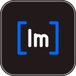

Imudist
גרסת ניסיון: 180 יום מההפעלה הראשונה
גרסת 180 יום
Windows Mac עם שבב Apple (M1 ומעלה) Mac עם מעבד Intel לא בטוחים איזה Mac יש לכם? תפריט Apple, ואז "אודות ה-Mac".גרסת 30 יום
Windows Mac עם שבב Apple (M1 ומעלה) גרסת ניסיון של 30 יום מההפעלה הראשונה. זו תוכנה נפרדת: היא מותקנת לצד הגרסה הקיימת ולא מחליפה אותה, וכל אחת שומרת את ההגדרות והמסמכים האחרונים שלה.איך מתקינים
- שומרים את המסמכים הפתוחים וסוגרים את התוכנה.
- מתקינים את הקובץ שהורד מעל הגרסה הקיימת. המסמכים וההגדרות נשארים.
- Windows: אם מופיע "Windows protected your PC", לוחצים "מידע נוסף" ואז "הפעל בכל זאת".
- Mac: גוררים את Imudist ל-Applications. בפעם הראשונה לוחצים ימני על התוכנה ואז "פתח".
אחרי ההתקנה הראשונה התוכנה מתעדכנת לבד: כשיוצאת גרסה חדשה מופיעה בה הודעה, ולחיצה אחת מתקינה אותה.